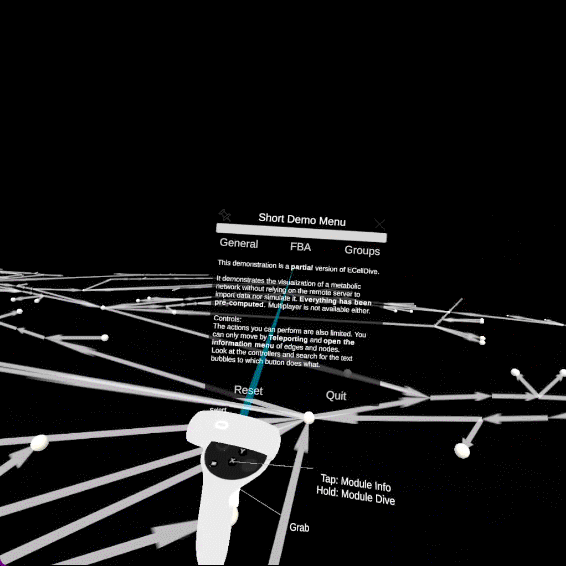

Quick Start
Note
Kosmogora NOT required
Launch ECellDive
After installing ECellDive on your Quest you can access ECellDive under the app menu for unknown sources. In you quest, open the app menu, then click on the search bar to make the category drop down appear next to it. Finally, open the drop down and select Unknown Sources.
Example

Start Demo
Credits
For demonstration purposes, ECellDive is shipped with a copy of a metabolic network iJO1366 accessible via the tutorials menu. All credits for the Escher & Escher-FBA platform go to the authors of the following papers:
EG Rowe, BO Palsson, ZA King (2018) Escher-FBA: a web application for interactive flux balance analysis. BMC Sys Bio 12:84 doi.org/10.1186/s12918-018-0607-5
Zachary A. King, Andreas Dräger, Ali Ebrahim, Nikolaus Sonnenschein, Nathan E. Lewis, and Bernhard O. Palsson (2015) Escher: A web application for building, sharing, and embedding data-rich visualizations of biological pathways, PLOS Computational Biology 11(8): e1004321. doi.org/10.1371/journal.pcbi.1004321
Pre-computed iJO1366
We have pre-computed the Flux Balance Analysis (FBA) and generated groups to identify the subsystems of IJO1366. The goal of this version is to provide a possible final state of some the operations available in ECellDive without needing to connect to Kosmogora nor master the full controls of ECellDive. It is really designed for a quick overview.
IJO1366 Panoramic View
Inputs
In this demonstration, the left controller is restricted to ray-based interactions with the UI or the objects. And, the right controller is restricted to the teleportation for the movements.
Open objects information
You can open the information panel associated to the edges (reactions) and nodes (metabolites) by pointing at them with the left controller and pressing the primary button.
Grab UI panels
Should the UI panels be in your way, you can grab them and move them around with the left controller and move them around.
Example

Visualize the FBA
On the main UI panel of the tutorial, with the left controller, you can click on the FBA Button; then on the Show FBA on Network button.
The edges will change sizes according to the fluxes values predicted by the FBA. Pointing at edges with the left controller will generate particles proportionally to the fluxes. Finally, the flux numerical value is visible on the information panel.
Example
Visualize Biological Subsystems
The model iJO1366 comes with embedded metadata that we used to automatically group the reactions and metabolites according to systemic data. On the main UI panel of the tutorial, with the left controller, you can click on the Groups Button; then on the Show Groups on Network button. The UI panel will help you match the colors with the elements in the 3D space.